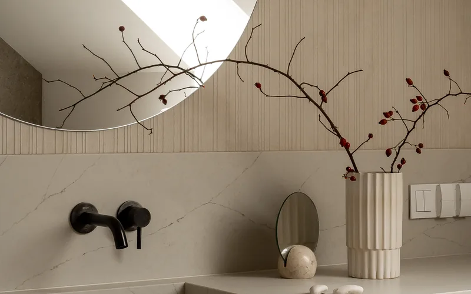

Nasza oferta
Praktyczny i elegancki materiał na obudowę kominka

Kamień to materiał stworzony do obudowy kominka — niepalna struktura, wyjątkowa trwałość i naturalna elegancja sprawiają, że jest to idealny wybór. Stosujemy płyty z granitu, marmuru, onyksu, trawertynu oraz nowoczesnych spieków kwarcowych.
Każda z tych odmian kamienia wnosi do obudowy kominkowej unikalne walory estetyczne i użytkowe, dlatego pomagamy klientom dobrać materiał optymalny do ich wnętrza i stylu życia.
Każdą obudowę projektujemy indywidualnie — możemy wykorzystać jeden gatunek kamienia lub stworzyć kompozycję łączącą różne kolory i faktury. Realizujemy zamówienia na podstawie projektów klienta lub proponujemy własne, autorskie aranżacje.
Niezależnie od tego, czy marzysz o klasycznym portalu z białego marmuru, czy o minimalistycznej zabudowie z ciemnego granitu, nasz zespół rzemieślników wykona obudowę, która stanie się centralnym punktem salonu.
Pracownia Kamieniarska AMICO to rzemieślniczy warsztat, w którym tradycja kamieniarstwa spotyka się z wieloletnim doświadczeniem.
Nie stosujemy seryjnej produkcji — każdą obudowę kominkową tworzymy ręcznie, poświęcając pełną uwagę każdemu elementowi: od precyzyjnego dopasowania płyt do wkładu kominkowego, przez profilowanie krawędzi, aż po staranne wykończenie powierzchni. Nasze podejście gwarantuje, że efekt końcowy jest nie tylko piękny, ale również trwały i bezpieczny w użytkowaniu.
Kominek z kamienną obudową to nie tylko źródło ciepła, ale przede wszystkim element dekoracyjny, który nadaje wnętrzu wyjątkowy charakter. Naturalna szlachetność kamienia podkreśla każdą aranżację — od rustykalnych salonów po nowoczesne apartamenty.
Dzięki odporności na wysokie temperatury i brak odkształceń termicznych, kamienna obudowa zachowuje swój piękny wygląd przez dziesięciolecia intensywnego użytkowania.
W naszej ofercie znajdziesz zarówno kompletne obudowy kominkowe z półką i bocznicami, jak i pojedyncze elementy — portale, nadproża, cokoły i listwy ozdobne. Każdy z tych detali jest starannie dopracowany pod względem wymiarów, profilu i faktury, aby tworzyć spójną, harmonijną całość. Zapraszamy do kontaktu — chętnie doradzimy najlepsze rozwiązanie do Twojego salonu.
Granit to jeden z najczęściej wybieranych kamieni na obudowy kominkowe, i nie bez powodu. Jego wyjątkowa odporność na wysokie temperatury sprawia, że nawet bezpośrednie sąsiedztwo paleniska nie powoduje żadnych przebarwień, pęknięć ani odkształceń. Granit osiąga twardość 6–7 w skali Mohsa, co czyni go praktycznie odpornym na zarysowania i uderzenia mechaniczne.
Dostępny w dziesiątkach odcieni — od głębokiej czerni Absolute Black, przez szarości i srebrzyste tony, aż po ciepłe beże i egzotyczne wielokolorowe odmiany z wyrazistym rysunkiem mineralnym. Obudowa kominkowa z granitu to inwestycja na pokolenia — kamień zachowuje swoje właściwości i piękno niezależnie od intensywności użytkowania.
Marmur od wieków symbolizuje najwyższy prestiż w architekturze i wykończeniach wnętrz. Obudowa kominka z marmuru — szczególnie z legendarnego białego Carrara z delikatnym szarym żyłkowaniem — to element, który natychmiast podnosi rangę całego salonu. Marmur doskonale nadaje się na portale kominkowe, półki i okładziny boczne, dodając wnętrzu klasycznej elegancji i ciepła.
Charakterystyczne żyłkowanie każdej płyty jest niepowtarzalne — Twoja obudowa kominkowa będzie jedyna w swoim rodzaju na świecie. Oprócz białego Carrara oferujemy marmury w odcieniach kremowych (Crema Marfil), zielonych (Verde Guatemala), czarnych (Nero Marquina) i wielu innych.
Onyks to kamień o wyjątkowej właściwości — jest częściowo przezroczysty, co pozwala na tworzenie spektakularnych efektów podświetlenia. Obudowa kominkowa z onyksu, podświetlona od wewnątrz taśmą LED, zamienia się w świetlistą, mieniącą się barwami instalację artystyczną, która robi ogromne wrażenie zarówno za dnia, jak i wieczorem.
Onyks występuje w ciepłych odcieniach miodowych, bursztynowych, zielonkawych i różowych, a naturalne warstwy minerałów tworzą hipnotyzujące wzory. To propozycja dla osób szukających absolutnie wyjątkowego, ekskluzywnego elementu wystroju wnętrza.
Trawertyn to kamień o ciepłych, kremowo-beżowych odcieniach i charakterystycznej, naturalnie porowatej strukturze, która nadaje obudowie kominkowej wyjątkowo przytulny, domowy charakter. Powierzchnia trawertynu może być polerowana do gładkości lub pozostawiona w naturalnej, lekko chropowatej fakturze — obie wersje doskonale komponują się z kominkiem, podkreślając jego funkcję jako serca domowego ogniska.
Trawertyn jest kamieniem odpornym na temperaturę i świetnie sprawdza się w obudowach rustykalnych, prowansalskich i klasycznych. Jego ciepły koloryt harmonizuje z drewnem, cegłą i naturalnymi tkaninami.
Spieki kwarcowe to nowoczesny materiał stworzony w procesie spiekania naturalnych minerałów w temperaturze ponad 1200°C. Dzięki temu są absolutnie odporne na szok termiczny — nie pękają, nie zmieniają koloru i nie odkształcają się nawet przy gwałtownych zmianach temperatury. To czyni je idealnym materiałem na obudowy kominkowe w nowoczesnych wnętrzach.
Spieki kwarcowe są dostępne w ogromnej palecie wzorów — od wiernych imitacji marmuru i betonu, przez jednobarwne powierzchnie, po odważne, designerskie desenie. Ich praktycznie zerowa porowatość oznacza pełną odporność na plamy, łatwość czyszczenia i brak konieczności impregnacji. To doskonały wybór dla osób szukających połączenia nowoczesnej estetyki z maksymalną funkcjonalnością i bezpieczeństwem.